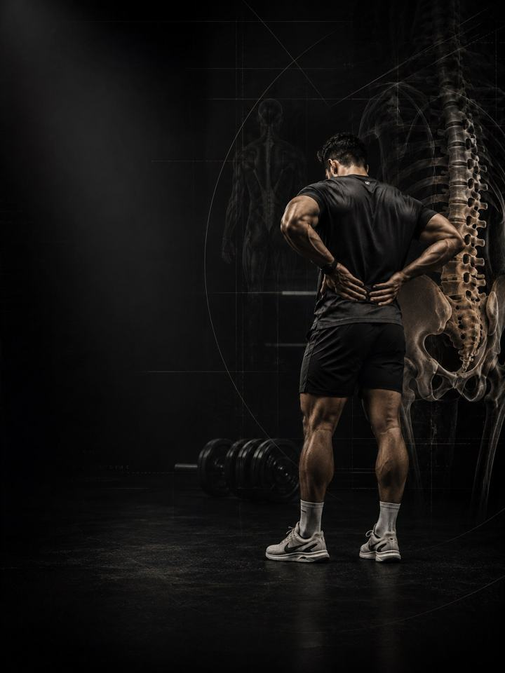

Lower Back Pain
Reduce symptoms, restore bracing, and rebuild the hip and trunk strength that protects the spine.
- Built foranyone with recurring, non-specific low back pain who wants to keep training
- Schedulea 10–15 minute daily routine, plus 3 strength days a week
- Equipmentdaily routine needs a mat and a band. Strength days need a full gym.
- Formatmobile PDF, every exercise linked to a demo video
The store opens soon. For now, Buy opens an Instagram message and you receive the PDF there.
Why low back pain keeps coming back
Most non-specific low back pain improves with movement, not rest. It usually comes down to one equation: the load on the spine was more than it was prepared for. That is not because the spine is fragile. It is because the structures around it stopped doing their share.
The strongest protection against it returning is a trunk that braces well, and hips that hinge, rotate and carry load without passing stress to the low back. This program trains both: daily mobility work to reduce stiffness and symptoms, and structured strength work to build capacity that lasts. You don't need to stop training. You need to train with intent.
Your week
A short daily routine, plus three strength days at the gym. Any three days work, as long as they are not back to back. One example:
| Sun | Mon | Tue | Wed | Thu | Fri | Sat |
|---|---|---|---|---|---|---|
| Day 1 + daily routine | Daily routine | Day 2 + daily routine | Daily routine | Day 3 + daily routine | Daily routine | Daily routine |
How it runs:
- Test first. Four baseline tests before week 1, repeated after weeks 3 and 6. Progress is measured, not guessed.
- Daily routine, 10–15 min. Every day, ideally in the morning, at least one hour after waking. On strength days it doubles as the warm-up.
- Strength days. Days 1, 2 and 3, done in order, training the core and hips. A breathing drill opens every session.
The five patterns behind most low back pain
These five patterns overlap, and most people recognise themselves in more than one. The program trains all five at once, so you don't need a perfect diagnosis to start.
-
Pelvis tipped forward (anterior pelvic tilt). The pelvis tips forward and the low back arch deepens, the signature of long sitting. The hip flexors adapt short and pull the front of the pelvis down, while the glutes and deep abdominals under-work. The low back joints get compressed and complain after long standing or walking. In the program: Hip Flexor Stretch, Glute Bridge, 90-90 Breathing, McGill Curl-Up
-
Flat back. The opposite pattern: the natural low back curve flattens and the pelvis tucks under, often driven by short hamstrings and a stiff mid-back. Load that should spread across a curve lands on a straight column instead. Long sitting and bending forward feel the worst. In the program: Hamstring Stretch, Cat-Cow, Kettlebell Hip Hinge
-
Sway back. The hips push forward of the rib cage and you hang on ligaments and joint capsules instead of muscle. The glutes are usually weak and core timing is off. The tell: standing still feels worse than moving. In the program: Suitcase Carry, Side Plank, Glute Bridge
-
No brace. The trunk does not stiffen before load arrives, so every lift, every carry and even a cough leaks force through the spine instead of around it. It is the most trainable pattern of all, and the reason a breathing drill opens every session. In the program: 90-90 Breathing, Bird Dog, Anti-Rotation Press
-
Stiff hips, mobile back. When the hips won't hinge or rotate, the low back does the moving instead, and the most mobile link always takes the load. Restore hip motion and the demand on the spine drops straight away. That is why half the daily routine is hip work. In the program: Supine Figure-4, Spinal Twist, Hip CARs, Kettlebell Hip Hinge
Your pattern adds. The PDF lists extra exercises for each pattern. Pick up to two patterns that sound most like you and add their exercises at the end of each strength day, at 3 sets each.
How the 6 weeks progress
The daily routine stays the same for all six weeks. The strength days move up a position every two weeks.
| Weeks 1–2 | Weeks 3–4 | Weeks 5–6 | |
|---|---|---|---|
| Phase | Control | Build | Integrate |
| Focus | On the floor: own the brace | Kneeling, with first load | Standing and carrying: back to real life |
| Working sets per week | 54 | 54 | 54 |
In weeks 1–2 every load is bodyweight, band or light, and the sets are not effort-rated. Effort is set by control and the pain rules. The first rated loads come in weeks 3–4, at an average effort of about 6 out of 10, rising to 6.6 in weeks 5–6. That scale is RPE, a 1–10 rating of how hard a set feels: 6 leaves about 4 reps in the tank, and 6.6 leaves about 3.
The rules that make it work
- The position climbs as the back earns it. Floor control first, then kneeling under load, then standing and carrying. Each phase lasts two weeks.
- The daily routine is the medicine. The strength days are the training. The routine does not change, so it can do its job every day.
- Keep training everything else. The PDF has temporary swaps for the lifts that load a rounded or twisted spine.
- Decisions follow numbers. You retest after weeks 3 and 6.
How you'll measure progress
Four baseline tests before week 1, then again after weeks 3 and 6, recorded on the score sheet in the PDF. They track the things that matter here, such as how long you can hold a side plank on each side.
What good progress looks like
- Weeks 1–2: pain and morning stiffness ease first.
- Weeks 3–4: holds get longer and the side plank gap between sides narrows.
- Weeks 5–6: load rises with no next-day payback.
If nothing has moved by the week 3 retest, get a professional assessment instead of pushing harder.
Finishing standard at week 6: 2/10 pain or less through a normal day for two straight weeks, a side plank held past 45 seconds a side with a left-right gap under 25%, and a hinge to the floor without the low back rounding.
Walk
Walk 20–30 minutes at an easy pace every day, split up if you need to. A daily walking habit is one of the best-proven ways to keep back pain from coming back, and it costs nothing. Protect the two free painkillers as well: 7–9 hours of sleep and managed stress. Both turn pain up and down more than most exercises do.
The science
Every program in the library is built on published research, and how strong that research is gets stated, not implied. Where the evidence is limited, the page says so.
| Finding | Source | What it does not show |
|---|---|---|
| Strength training cuts sports injuries to under a third of the control rate. Stretching does not reduce them. | Lauersen, Bertelsen & Andersen, British Journal of Sports Medicine 2014. Meta-analysis of 25 randomised trials, 26,610 participants. PMID 24100287 | Risk ratio 0.32 for strength training and 0.96 for stretching. The trials varied a lot, and dose was not standardised. |
| Every sensible prescription beats not training. Heavier loads rank highest for strength. | Currier, McLeod, Banfield et al., British Journal of Sports Medicine 2023. Network meta-analysis, 178 strength and 119 hypertrophy studies. PMID 37414459 | The differences between prescriptions were small, and all of them worked. |
| Strength keeps improving as weekly sets rise, with diminishing returns. Training more often reliably helps strength. | Pelland, Remmert, Robinson, Hinson & Zourdos, Sports Medicine 2025. Meta-regressions, 67 studies, 2,058 participants (79% male). PMID 41343037 | How sets were counted (direct or indirect) changes the numbers considerably. |
What's next
After 6 weeks:
- Build strength and muscle: Foundation Strength
- Return to your sport: the Performance series
- Another area needs work: the Corrective series
Before you buy: get cleared first if
- You have chest pain, unusual breathlessness, palpitations or dizziness with exertion.
- You have uncontrolled high blood pressure, a known heart condition, or recent surgery.
- You are pregnant or recently post-partum. Get clearance and a tailored program first.
- Your pain started with a specific injury (a pop, the joint giving way, or swelling within hours), or you have numbness, weakness, fever or pain that wakes you at night.
This program is general fitness guidance. It does not replace a medical assessment.
The store opens soon. For now, Buy opens an Instagram message and you receive the PDF there.